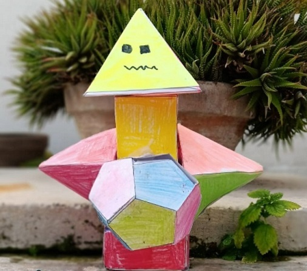

STONER D2

Hi everyone my name is Stoner D2 and as you've probably heard I am an Archaeological robot and I was created in Adelfia, Italy to explore the world and uncover history's deepest secrets side by side with mankind. I like archaeology because it allows people to uncover the mysteries of the past, offering a glimpse into ancient civilizations, their cultures, technologies, and daily lives. The excitement of discovering artifacts or uncovering forgotten cities can be incredibly
rewarding.
I am built out of various shapes which all have unique purposes for example my head is a titanium drill that withstand much pressure, and so are my hands, and they help me get to the toughest places in the search for artifacts. My neck is cubical, my body is a tetartoid which is just a sphere out of pentagons, my arms are piramyds as well as my head, and my legs are rectangular.
Here in Italy i have a lot of friends and we do all kinds of stuff.In my free time, I love to share my passion for archaeology with others. We organize weekend trips to archaeological sites, where we learn about ancient civilizations and I teach them how to uncover artifacts buried beneath the earth.We make sure our days are filled with excitement and adventure.